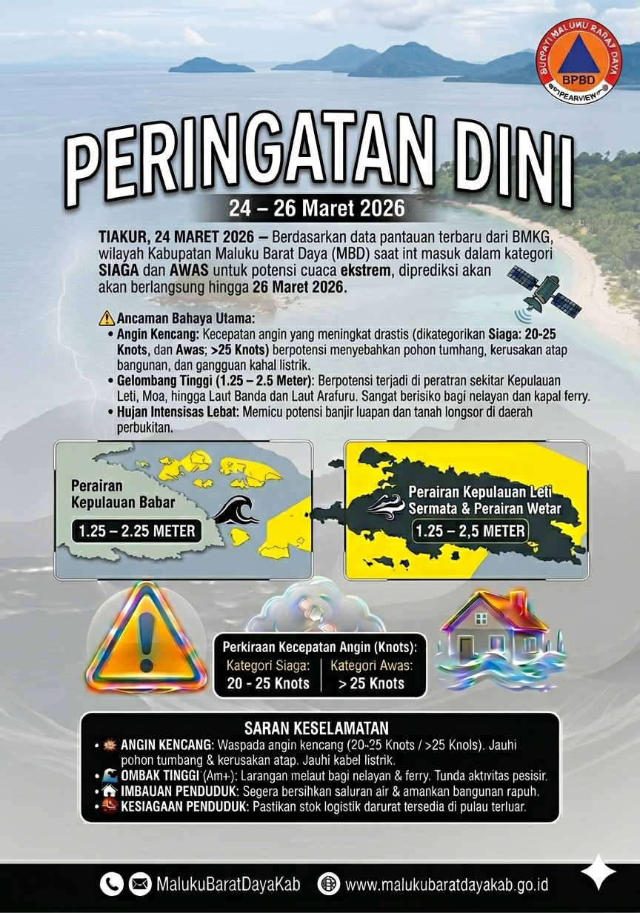

Analisis BMKG MBD: Wilayah Maluku Barat Daya masuk kategori SIAGA & AWAS.
- 🌪️ Angin Kencang: >25 Knots (Potensi pohon tumbang).
- 🌊 Gelombang: 1.25 - 2.5 Meter (Berbahaya bagi Ferry/Nelayan).
- 🌧️ Hujan: Intensitas Lebat di perbukitan (Waspada Longsor).